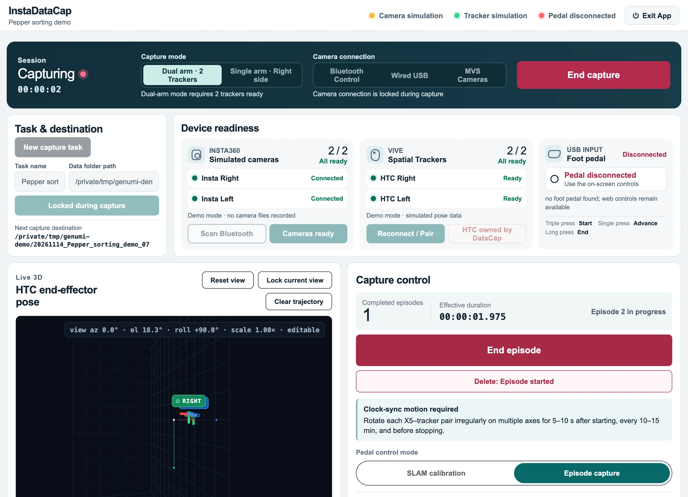

Set up InstaDataCap
Start with Ubuntu 24.04. The same InstaDataCap interface supports the X5 wireless and X3 wired workflows.
Open the capture interface
Clone InstaUMI and run this from the repository root. The dry run writes a simulated session so you can practice recording and marking episodes.
python3 -m datacap.webapp --dry-run --host 127.0.0.1 --port 8788Open http://127.0.0.1:8788/ on the capture computer.
Set up X5 cameras and VIVE trackers
sudo apt install bluez python3-dbus python3-gi python3-venv \
libhidapi-hidraw0 libhidapi-libusb0 ffmpeg
python3 -m venv datacap/.venv
source datacap/.venv/bin/activate
bash datacap/tools/install_hardware_access.sh
cp datacap/config.example.json datacap/config.jsonSet the capture directory, camera roles and tracker roles in datacap/config.json. For real tracker capture, follow the DataCap README to install a compatible tracker backend and set up device roles. Use Bluetooth Control for X5. Set insta.name_prefixes to ["X5 "] or enter your own camera BLE addresses. For X3, follow the wired setup.
python3 -m datacap.webapp --config datacap/config.json --host 127.0.0.1View the InstaDataCap interface
